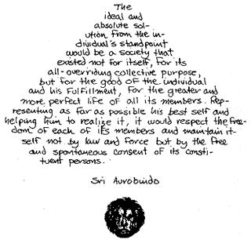

Reprinted by permission from RASBERRY/$3.95 plus 5041 postage/
Freestone Publishing/440 Bohemian Highway/Sebastopol, Calif. 95472.
Notes From The Summer of1970-June
Meanwhile, back in Freestone . . .
. . . Golden summer of California. The fog stays west of us, below our hilltop in Sonoma County. It's still spring back east. Here there will be no more rain until winter . . . steady sun, fog, hawks wheel on the wind off the ocean. At walking back to the house from the sauna, owls hoot from the trees. It is so quiet we can hear a dog barking across the valley, two miles away . . . And it is here that we search for a balance that feels right; a context in which to live, from which to envision the future lives of our children. We try out the vision.
We buy doves, raise chickens, get into organic gardening, off the clothes most of the time, make tipis, sing . . . and find that breaking free ofthe bonds of one culture doesn't create the agenda for the next. Anger has taught us nothing, has won us only a flawed space. Our necks still ache. Our work staysOut There like a vestige of the Protestant Ethic, a controlling force . . . even doing the book together as a means for reaching out to a new community with whom we can share . . . work.
We are stretched between: a vision-soft, flashes of joy, at times a community of sharing, loving people, friends with clear eyes, flowings toward expanded consciousness; and a sense of knowing a hard reality-the knowledge that 70% of the humans on this planet are hungry, many starving, person by person, unrelieved by the very system whose abundance pro vides us with space in which to experiment . . .
Our context for now: knowing that what is emerging; completely new to us (but perhaps not new at all to the ancient heritage of our cells and bones) and that our definitions and expectations distort, perhaps limit the flow; and knowing that a parameter for a "humanized, neo-industrial revolution" is at least a response to those starving and to those who would destroy sources of life for personal greed.
But in the face of the immensity of the problem, the blundering brutality of the solutions cast by experts, the apparent mendacity and greed in the council's of power, the lack of time . . . in the face of that our responses seem petty confused, without flows of energy from spiritual roots. We stop buying new things; no more wasting food, no more buy ing poisoned food-we'll grow our own, become skilled in cooperatives, playing the world game. But who eats more because of our lives?
And so we are pulled towards those who say that the sweeping changes necessary for equality and sharing and humaneness ride only on violence . . . "it must come to that," And the residue of the brutal May killings at Kent State and Jackson State festers in our minds . . . for moments and moments the temptations o f violence seem the correct r esponse, not an indulgence.
Fighting. Gestures to a new world defined by old ways; tempting because we do not know the new ways; tempting because love can be fragile, transitory-hate a comfortable familiar cloak. But we want more than a life of reacting. Can't-we-somehow-go-around? We know that fighting is suicide. We do not know whether "going around" is suicide or not. Therein lies our meager forward reference. Going around is neither attack nor retreat.
Something else.
Not waiting-that works only for those without children. Because of them the room to drift is gone. Our choices undeniably affect their futures, each choice an implicit prophecy. Pressure, floating on the California golden summer days.
* * *
We seek to reduce the pressure by focussing down on our lives, and by seeking balance-not the harmony of a future perfection, simply the harmony between current vision and current reality.
And so it is technology-still our dominant myth, still the hope of humane solutions-that pulls us back into the culture of our fathers, back into accommodating "for the greater good" and once again, and again and again, we must face what Cleaver taught us: fence straddling is hard on the genitals. It diminishes one's . . . effectiveness . . .
* * *
The month wears on. The longest day of the year. Equinox . . . balance . . . the concept doesn't hold. Balance is a premature resting, a mundane plateau, like turning too soon when skiing, missing that exquisite point out beyond the fall line, where motion counteracts-enhances - the imbalance . . .
And the idea then grows: it is not balance-as-compromise, it is balance-as-poised-motion, the Tai-Chi of counter-acting forces; motion. The idea of Mao's Long March comes into our winds: a transition . . . all changes create imbalances, all learning imbalances. Then what ways of change will also be harmonious? Without fear? Making love? Yes, and simply accepting transition as Life.
A further thought from Martin Buber brings things together: whatever the transition, the movement, a long march-whether there's a "getting there" for us, or whether "getting there" is merely a vision we hold on behalf of our children-whatever it is, it can be in and through love, the thou that arises between people who know holy ground in themselves, and in the other person. And with fear thus diminished we realize that the changes-from place to place, from culture to, culture, from consciousness to consciousness-have their own magic, their own profound myths, their own wholeness. The very process of change itself may be the "place" for which we've been searching.
Something like this can be the base from which we'll share and try to increase our learning . . . motion for us being a better context than, say, thinking and planning about schools. We'll see what the summer brings.
Every now and then we wonder what's going on. "Clear" forward references come and go. But we'll share the direction - and mood - of our gropings (more, if you were closer)
* * *
Maybe it started with Jean-Jacques Rousseau, when he published "Emile" in 1750 (Emile ou de l'education).
He advocated the removal of all overt constraints from the child, believed that defects of character present in French society were layed on by the influence of the culture and were not intrinsic, believed that the child's world was different from the adults, thought that children were naturally curious ("Arouse this desire to learn in the child . . . and any method will work"), and thought that the teacher should be friend and guide instead of transmitter of knowledge.
One wonders how educators could have known these writings through the years - for they have been immensely popular - and done what they have done. As opposed to the rigidly controlled "little adult" approach followed in schools through the years, hear Rousseau:
"Of all the faculties of man, reason, which is, so to speak, the product of all the others, is the last and most difficult to develop and it is this that they wish to use to develop the more primitive faculties! . . . nature would have children be children before they are men. . ."
He advocated "getting inside the mind of the child," not to fill it up, but to try and learn, as adults, what we've forgotten of the child's world (an idea at the foundation of Ernst Schactel's famous psychoanalytic concept of "childhood amnesia" - we almost completely forget what childhood is really like). Rousseau revealed the beauty, the quality, the emotions and joy of learning in a free and natural context.
Yet he advocated huge deceptions - "Should we tell them how bad it is, frighten them so they won't play and thus won't grow? No, of course we cannot" - and thus the genteel but deeply penetrating weapon of guilt.
He provides a vision of freedom. Yet he reveals what is also a problem for the humanistic psychologies and the Esalen encounter movement: "freedom" is highly vulnerable to manipulation by those who control the rules of the game. A "total honesty," a mutual undressing, can merely slip the control to a deeper level. And we see this in free schools as well. "Do what you want," we say, and too often we make certain the children do what we want!
A friend recently 21, waiting for years for the grand moment of exercising his voting rights, finally gets to the voting booth. He comes out with an incredulous look on his face, saying: "There are no choices".
On the train to Santa Barbara we go to the diner for lunch. It is a completely mechanized-automat arrangement, everything prepackaged. Salli says in panic: "There are no choices".
* * *
A new way is happening all over. With a little space, sometimes a little help from friends, it comes bursting out. You know it when you get into it. There's no mistaking it. More than feeling good, more than flowing or visions, there's a way of living. Natural, real and good. (And it is not an "it".)
Instead of a reality based on measurement, the new ways are feeling what you really are and trusting that - trusting because it shares so well.
Simple, natural things are important now. The easy things: whole things, flows, the joy of discovery instead of fearful conformity; making love instead of faking it. Our own sweet rituals.
* * *
And so it is not surprising that a lot of us have made a commitment to our children's freedom, for space in which they can learn, unfolding instead of being shaped, finding their own unique paces, their natural skills and juices. So we must make our own schools.
* * *
And most of them fail before the end of the first year. That's a lot of learning - for the adults, learning about community, sharing, groups, knowledge, teaching, all the rest. But it's also one cosmic dung-heap of pain, and, all too often, pretty damaging to children.
We don't know all the reasons for these difficulties. Perhaps thinking about trouble makes it. Searching for "reasons" seems archaic.
But a few things we've noticed: There's a lot of fear in schools that eventually fail; and some contexts seem to work better than others.
So we're going to look at contexts just a bit.
* * *
A CASE AGAINST PUBLIC SCHOOLS
The ideals espoused on these pages and in free schools everywhere exist also on placques in school superintendent's offices across the country. Reforms are underway in many suburbs and ghettos, and in whole regions - South Dakota, Vermont, Philadelphia, etc.
There are attempts to integrate "content" with "emotions," to reduce the deadly monotony that used to be regarded as necessary for building character, to free up space for individualized learning, to tie into the essence - structures of fields of knowledge so they can be much more excitingly communicated, and to bring in the best technology and media, materials and resources.
What then is the case against public schools? Fixing them up seems like improving the interior of a runaway train heading for a cliff. The public schools exist to maintain this culture. And the basic form and approach, in use with only minor variations across the country, are so flawed as to be unsalvagable.
However much space is freed, team-teaching is tried, the English systems of interest-centers is used, the expectation, deeply embedded, is: that schools will be in buildings, with classrooms, with about 30-35 children per teacher. Most innovations, therefore, must be desperate attempts to improve on this basically impossible and psyche-destroying situation. It is basically unnatural - inhuman, if you will - for children to be restrained and controlled in their early years, especially for the convenience of "numbers", "the baby boom," "the economic realities," etc. etc., and it is doubly an outrage that children should be so constrained on behalf of a culture that has performed morally, spiritually, even materialistically no better than this one.
Whatever reforms are achieved will only make the schools more efficient in fulfilling their mission of supporting American culture.
The thousands of educators in the country read Holt, Neill, Goodman, Friedenberg and many other reformers. School administrators' desks are covered with protests, polite and impolite pleas from teachers and parents for improvement. But there is such incredible inertia! In a culture splintering and cracking at the seams there is fear - to launch out in a truly experimental way ("well, we mustn't experiment with the lives of children, you know"). The country reads of the occasional round school several times a year in Life and Look, of George Leonard's visions of Esalenized schooling, of shiny new teaching machines, and of the occasional teacher revered by community and kids, and thus we solidify a common approach, reinforce and make seem secure a system that has never worked very well, even while around the schools the world is exploding with change.
A teacher from Florida writes us: "I am a teacher in public school. I can no longer conscientiously support the type of behavior that is rewarded in public schools. As a matter of fact, the whole reward system is immoral, as it entails imposing values on another person. Moreover, I see that no one is learning very much in school except perhaps how to fail, cheat, coerce, ignore, lie, get away with things, hate teachers, hate learning, hate books, disrespect anyone who sets himself up as a leader, etc... I am not a rock-throwing radical. I am an empethetic member of society, and until recently a very ordinary public school teacher, so that I make this indictment of my own profession very seriously and literally. It is a disgrace that so few fellow teachers are humane enough to get out. . ." (Marius Van Handel, Vero Beach, Florida)
But there is great danger in basing a new school only on reaction - another form of competition, trapped in the old models, too close to the dominant culture's influence, "pale reflections . . .
For further thoughts read "The Case Against Public Education" From the Committee For Freedom of Choice in Education, Box 3223, Inglewood, Calif. Also visit your local school.
Some of the new schools are started by those deeply into the new ways: communes, or high concentrations of people living new life styles in urban areas. Schools started in these contexts tend to be genuinely free, based on the premise that people are basically good and thus perfectible if their environment will allow it. Such learning trips often seem to flow - things just happen and participants seem to rise above the troubles.
Even so, such schools have their "limits of toleration", a point where pressures seem to flip the participants right back into the old forms: A few less kids in classes - but still classes; more freedom - but still the "I-have-the-knowledge-and-you-need-it" premise.
* * *
Others of the new schools are started by those who know the changes but still must fight. They have become aware of just how much and for how long they've been brutalized. For them, a basic change - revolution, if you will - is inconceivable without fighting for it. So they fight for it rather than for themselves; and for others, for us, for their children. But they fight.
To prepare for battle is to master fear. To fight coherently is to have a clear ideology. So these schools work to master the fear and to inculcate ideologies, sometimes using the heaviest behavior - shaping modes available. Within this camp, ethnic groups often feel that energy for "the battle near at hand" must come from a flowering of "just who we are, baby". Or, if not that, they are often pushed by the idea that the skills necessary to run the next North American culture must have a righteous number of their people involved.
* * *
Many of the new schools are rooted in a liberal, educated - and Middle Class - theory of education. A.S. Neill had been implying it for years. ("You don't understand kids," he would grumble. "You do it your way, I'll do it mine.") Now we have John Holt, looking like a middle class unsuccessful golf pro, saying it right out loud: "They're killing our kids". And he, and many other critics, have given us a very coherent basis for rejecting public schools. Marching orders, as it were. And now the possibility, the reality of actually getting out of public schools seems less fearful than staying in them. Some schools so founded really get it on.
But generally, the middle class is a subtly dangerous context for truly free learning environments. Such schools often want only to add pizazz, their middle class media-borne version of "the counter culture." They want their lives to be as sensuous as hippies' (but cleaner); as daring as yippies' (but safer). They dream of mastering and humanizing the dominant culture instead of either escaping from it or rebuilding it from the ground up . Straddling the fence: Often enroute to a studied, safe, dropping out ("when we get $20,000 in the bank"), always accommodating, not realizing that a dominant culture remains polite only as long as it hopes to get you back, and that it turns with a viciousness born of great fear on those who have crossed into new ways.
("What you do is blanket them with love," my new friend from Cotati added to an earlier draft of this. And an old friend said: "Blackmail them with quality.")
So how did such diverse contexts get to be a "Movement"?
Two ways, we think.
One is the common rejection of public schools at least implicit in all alternative schools. The public schools aren't an outrage for the children of young hip families alone; nor for angry screwed-for-centuries' Blacks or Chicanos; nor for erudite New Left intellectuals; nor for suburban young marrieds becoming slightly unhinged from the dominant culture through a few encounter groups or a little dope.
No, with a very few exceptions, the public schools are an outrage for all those not in the Silent Majority of Amerika, and that's a lot of very different people viewing life - and change and learning - from a lot of very different contexts.
And sometimes they all do get together in one group, the only common bond being anger and frustration with the dominant culture's schools. Using the techniques of gettinghonest-fast-through-encountering, or just fighting things out, such alternative schools actually may get going and really work as beautiful, tough enterprises with lots of loving, fighting, debating, and working. Seeing these new experimental schools that embrace in microcosm the immensely broad strands of "alternative cultures," one can almost believe in the old America-the-melting-pot crap they used to feed us in grammar school.
Too often, however, we see broad-based reaction-borne new schools (thinking themselves a "movement") prematurely solidifying into forms which are but pale reflections of plasticized suburban schools. No deep changes, only slight shifts in procedures. The ceaseless warring (and high tension) between people with profoundly different premises often takes its toll. Energy gets sucked off. What at first seemed like friendship (people gathered congenially around critiques of public schools) soon turns to havoc; too many people jammed together under one pseudo-umbrella.
Another reason new schools are typed a "movement" is that radical heavies are always publicly proclaiming any rejection of the dominant culture as The Movement. That's all right, except that the media, always passionately hungry for such tension-easing oversimplifications, latches onto such statements in their own terms. Quantity ("there's lots of those weird new schools, right?") becomes the criterion. And when the media discovers us they don't come out into it; we go back into camp with them to be described, measured and shaped in their terms. And the degree to which we believe what we read about ourselves-that's the degree we're dead. (Perhaps if we would call everything from The Good Times to Time "the Media", they would stop calling everything from a Black Panther school to a 10-year-old Quaker private school "The Free School Movement".)
But the hell with the media. Worry about it only to the extent that you get deluded into jamming yourself into an impossibly diverse group, or into believing it's going to be easy, or that the conflicts mean there's something wrong with you.
HARVEY
Thinking back about That First Glimmer of this whole pluralistic new school thing as a Movement.
I remember, it was late 1967, or early '68, and one of the art teachers at the Santa Barbara Free School took a VW bus-full of our teen-age kids the 100 mile trip to Los Angeles, to see the new Impressionists show at the L.A. County Art Museum. If you knew the County Art Museum, you would appreciate the wonderous spectacle of a dozen of our raggy, long-haired, bale-foot and dirty kids wandering through those sterile marble-modern, vacuous halls. It was as though the kids were there to dispel the sadness of the place - flowers in all that clinical darkness. And then, someone noticed an astonishingly similar group of young people - wandering, equally out of context with those marble halls. Their style was so familiar: ten kids, a couple of smiling, long-haired young adults accompanying them, dressed loosely, bodies moving easily . . . no real visible sense of order to their wanderings. Then one of the kids from the Santa Barbara Free School went over to their group and asked them, "Hey where you guys from?" And one of the kids in the other group said. "Topanga Free School, man. Where you birds fly from . . .?" And our kids said, "Santa Barbara Free School, man!" And they all broke up in great laughter. They were all hugging each other and rapping and dancing around and laughing and asking each other questions . . .
You see, prior to that moment, no one realized that he had brothers and sisters Out There. No one realized that there were other freaky, alienated, little experimental schools beginning to blossom all over the United States. 1967, it was just beginning. Everyone till then thought that his school was unique, isolated, estranged from the main stream culture - and no one was very secure in what he was attempting, as student or teacher. They were only aware that they were quite alone and quite alienated from just about everything . . . But when the two schools encountered each other in those marble halls, it was magical - their combined energies just exploded. They were convinced, reinforced in what they were attempting. And they knew there were allies and peers in other communities: to visit and bounce off of and to reflect each others' manners and styles . . .
So that, in a more simple way, is the essence of what the New Schools Exchange was trying to be all about when we started it a year ago - that magical bringing together of forces. But the Exchange ...the Exchange finally is something else again.
Churches have their coffee houses to keep kids out of real ones. The great American Middle Class absorbs what might otherwise change it. It absorbs models and trends, your fragile not-yet-born ways; and then belches back at you with token gestures, granting artificial permission for what is yours already; sporadically recycling beer cans; the melting-pot concept turned into deadly embrace.
* * *
For those of us going through lots of changes, the hope runs high that the new schools themselves will provide the context, the vehicle for the transition into the New Ways.
We spend days going through the files of the New Schools Exchange in Santa Barbara, the major clearing house for information about new schools. The words on the mimeographed brochures pile up - a litany of hopeful determination:
"Here, the child is respected . . . " ". . . learning can be like play . . . " "Children know what they want" " . . . the prime goal is creativity at all levels . . . " "Children are basically good" "We'll teach them to love what they are . . . " " . . . our program is organic - a gestalt" " . . . maximum freedom under wise supervision . . . " "We train the child to be self-directing . . . " "We're pro-life" " . . . WE AREN'T PREPARING COGS FOR THE KULTUR'S MACHINES" " . . . Our Program is Love" ` . . . the child chooses" "basics are taught through real action projects . . . " "most instruction is individual tutoring . . . " " . . . we make rules together".
It takes a long time to realize that a school, free or otherwise, is just a bunch of people, doing things. And if those people are confused, or afraid, the school will be confusing and fearful. The school won't make things right by itself. It gets down to where you're at. The "context" is people.
* * *
The essential dilemma is this: though a school must arise from the vorpal heart of its culture, the new culture from which - and for which - we're trying to create schools is not yet formed. Instead of our schools being part of a new world, of which we enjoy infrequent but exquisite visions, they reflect the turmoil of these fluid days, the facets and streams of a movement world wide, dozens of inter-twining strains, forms emerging out beyond our very consciousness, sometimes a feeling of something millions of years old, sometimes a false and superficial channel. . .
|
|
|
|
|
 |
|
|